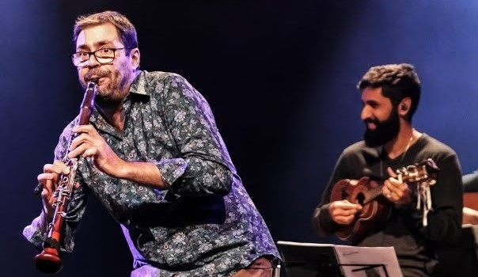

Alexandre Ribeiro, nascido na cidade de São Simão, interior de São Paulo, é um clarinetista renomado, herdeiro de grandes nomes do clarinete como Severino Araújo, K-Ximbinho, Luiz Americano, Abel Ferreira, Nailor Azevedo e Paulo Moura. Iniciou seus estudos musicais aos 12 anos com o maestro Maurílio de Oliveira Junior, posteriormente teve aulas com a clarinetista Krista Helfenberger Munhoz.
Alexandre Ribeiro, nascido na cidade de São Simão, interior de São Paulo, é um clarinetista renomado, herdeiro de grandes nomes do clarinete como Severino Araújo, K-Ximbinho, Luiz Americano, Abel Ferreira, Nailor Azevedo e Paulo Moura. Iniciou seus estudos musicais aos 12 anos com o maestro Maurílio de Oliveira Junior, posteriormente teve aulas com a clarinetista Krista Helfenberger Munhoz.
Dos 14 aos 16 anos, participou da Orquestra Sinfônica Jovem de Ribeirão Preto. Aos 18 anos, ingressou na Universidade Estadual Paulista – UNESP, no curso de bacharelado em clarinete, sob a orientação de Sergio Burgani e Luiz Afonso Montanha. Durante esse período, atuou como primeiro e segundo clarinetista na Banda Jovem do Estado de São Paulo, regida pela maestrina Mônica Giardini. Participou dos festivais de Campos do Jordão (1998) e Curitiba – música popular (2003), onde teve aulas com Paulo Moura, Luiz Otávio Braga e Joel Nascimento.
Com técnica exuberante e interpretação primorosa, Alexandre cativa seus ouvintes desde as primeiras notas. Ele se apresentou ao lado de renomados artistas como Guinga, Dominguinhos, Yamandu Costa e muitos outros. Seu talento é reconhecido por sua habilidade em compartilhar o palco com grandes nomes da música brasileira e internacional.

Participou de gravações com grandes nomes como Alessandro Penezzi, Teresa Cristina, Dominguinhos e muitos outros. Em 2009, formou uma notável parceria com Penezzi, resultando nos álbuns "Cordas ao Vento" e "Ao Vivo na Bimhuis-Amsterdã". Essa colaboração também gerou uma série de shows pelo Brasil e pelo mundo. Sua carreira é marcada por uma vasta gama de colaborações e um reconhecimento internacional significativo.
Alexandre tem contagiado plateias em renomados festivais no Brasil e no exterior, incluindo o Choro
Jazz Jericoacoara, Festival Chorando Sem Parar, San Jose Jazz Festival e o Skopje Jazz Festival. Sua música também encantou o público em prestigiadas salas de concerto como o Auditório Ibirapuera, Sala
São Paulo e Concertgebouw. Em 2019, realizou uma extensa turnê pelos Estados Unidos, passando por
cidades como Seattle, São Francisco e Berkeley. Sua carreira é marcada por uma presença vibrante em eventos. Como professor, Alexandre ministrou cursos em diversos eventos renomados, como a Oficina de Música de Curitiba, California Brazil Camp e Festival de Música de Itajaí.
Criou o baile do ribeiro no qual surgiu de uma necessidade do Alexandre Ribeiro de homenagear seu mestre e ídolo Paulo Moura e seus famosos bailes de gafieira dos anos 80. Ele também participou da Semana do Choro de Barretos e do Festival de Clarinetes da Patagônia, além de eventos internacionais como o Festival de Música de Port Townsend e o Berkeley Festival of Choro. Sua atuação em festivais e oficinas destaca sua contribuição significativa para a educação musical.
 Atualmente, é professor de clarinete na EMESP Tom Jobim e co-fundador da Escola de Choro de São
Paulo (ECSP). Na área das Artes Cênicas, participou de espetáculos com diretores e atores. É integrante do espetáculo
"Garrincha", dirigido por Bob Wilson, e diretor musical do espetáculo de dança "Fino Fio", de Maria
Eugênia Almeida, dirigido por Cristiano Meirelles.
Atualmente, é professor de clarinete na EMESP Tom Jobim e co-fundador da Escola de Choro de São
Paulo (ECSP). Na área das Artes Cênicas, participou de espetáculos com diretores e atores. É integrante do espetáculo
"Garrincha", dirigido por Bob Wilson, e diretor musical do espetáculo de dança "Fino Fio", de Maria
Eugênia Almeida, dirigido por Cristiano Meirelles.
Além disso, é membro do projeto “Panorama do Choro Paulistano Contemporâneo”, Grupo Luceros dança
Toninho Ferragutti, Grupo Roda de Choro, Grupo Ó do Borogodó, Projeto “A Música Perto de Mim”, colaborador do projeto “Percorso Ensemble” e arranjador e
integrante da Orquestra Platinelas.
Em 2014, lançou o disco "Alexandre Ribeiro Quarteto" e, em 2017, seu primeiro álbum solo, “De Pé naProa”, álbum que mistura clarinete e clarone com efeitos eletrônicos,
combinando improvisos e experimentos sonoros. Recentemente, criou
séries no YouTube como “Um Clarinete na Cidade” e “Fluxos”, e lançou o disco digital
“Encontro/Encontro”.